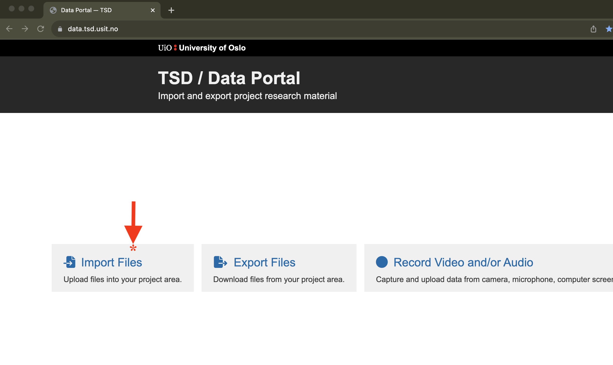
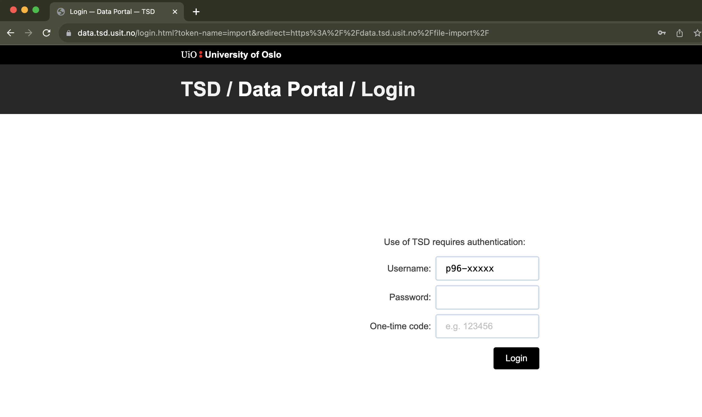
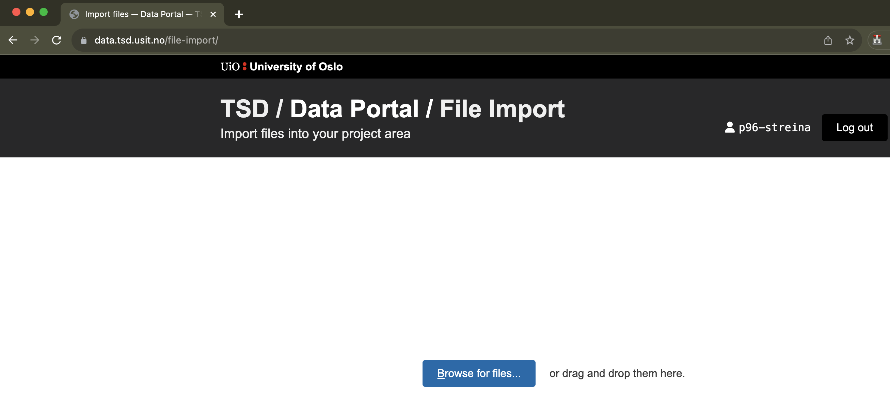
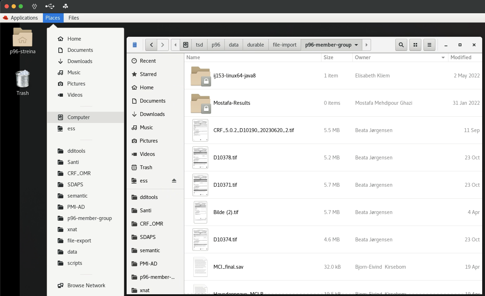
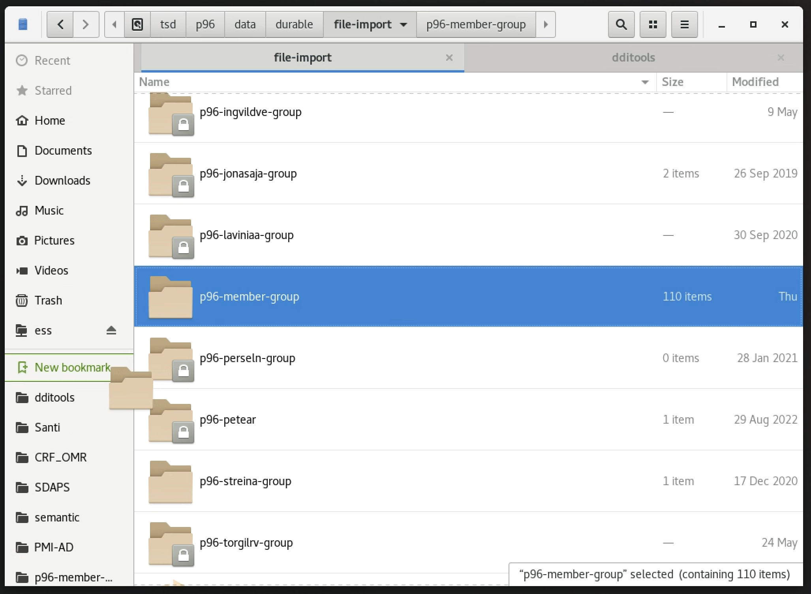
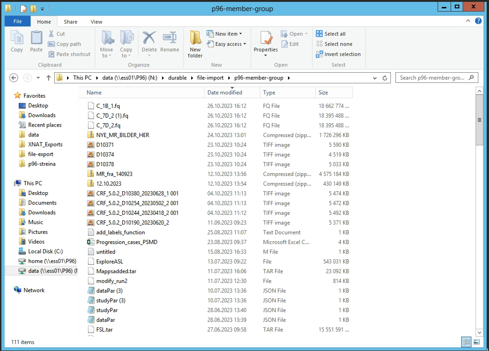

TSD File Import
Uploading files to TSD
To import files into TSD access https://data.tsd.usit.no/ and click on Import files.  You will be prompted to enter your TSD user credentials and the One Time Passcode (OTP). 
After authenticating, you can either browse your computer for files, or drag them to the browser. 
Once the import has finished, you can access your files in TSD from the main data folder.
Accessing files in TSD
Depending on which Virtual Machine (VM) you are logged in, the path and browsing interface differs a bit.
Linux (p96-rhel8-01-pool):
The path to the file import folder is /tsd/p96/data/durable/file-import/p96-member-group. To access it, open the file browser from the Places toolbar menu and either navigate from the root folder or type in the navigation bar by holding the control (ctrl) key and typing l (ctrl + l).

To avoid doing these steps each time, it is advisable to create a bookmark for the folder. To do this, navigate to /tsd/p96/data/durable/file-import, locate the p96-member-group folder icon, click and drag it to the left pane, just bellow the default system bookmarks, until a green New bookmark indicator appears

Windows (p96-win01-pool)
The path to the file import folder is N:\durable\file-import\p96-member-group. You can access it by clicking on the Windows menu, then This PC. The data folder has a shortcut on the left pane. From there browse to file-import and p96-member-group. You can also mark this folder as a favorite to have direct access.
